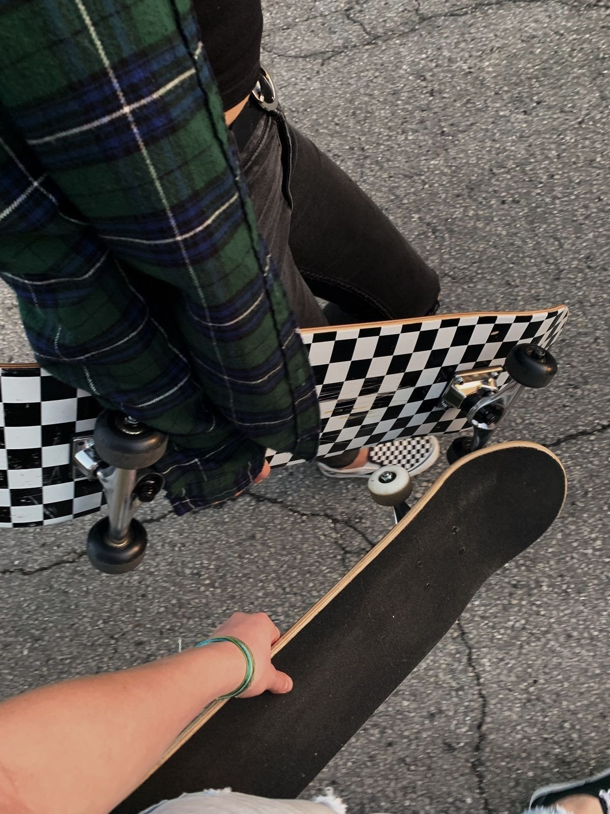

Как я узнал о скейтинге
Лет в 14 я заинтересовался скейтбордингом. Я увидел парня, который катался на скейте, и понял, что хочу научиться делать те же трюки. Родители купили мне скейтборд, и я начал тренироваться каждый день после школы. Вскоре я научился кататься на скейте и делать простые трюки. Мне это очень нравилось, и я мечтал стать профессиональным скейтером.Я проводил все свободное время на скейтпарке, тренируясь и улучшая свои навыки. Однако со временем у меня появились другие интересы, и я перестал уделять столько времени скейтбордингу. Я начал заниматься другими видами спорта и увлечениями, и скейтбординг остался в прошлом. Несмотря на то, что я бросил скейтбординг, я всегда буду помнить те времена, когда я страстно увлекался этим видом спорта. Иногда я даже вспоминаю свои трюки и пытаюсь повторить их на скейтпарке. Возможно, в будущем я снова найду в себе интерес к скейтбордингу и вернусь к этому увлекательному занятию. Возможно когда нибудь я куплю скейт своему ребенку и ему гораздо больше повезет в этом занятии, ведь скейтинг это огромный пласт культуры в состоящий не только из одних лишь трюков, но и касающийся моды граффити и ещё много чего другого. Опять же может в скором будущем я снова приорбрету скейтборд и начну заниматься трюками.